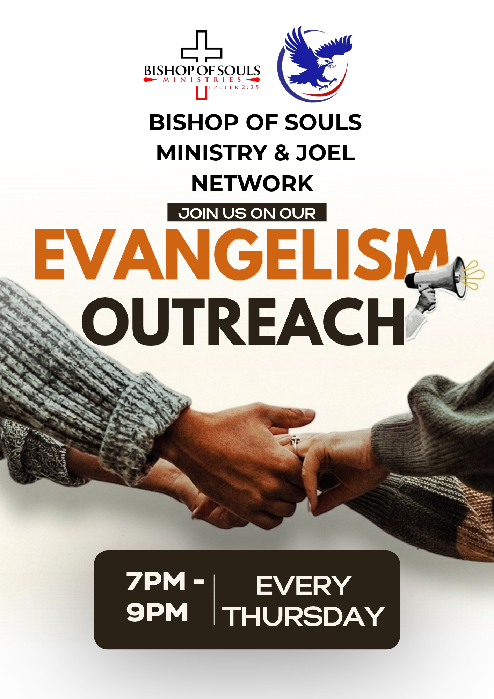
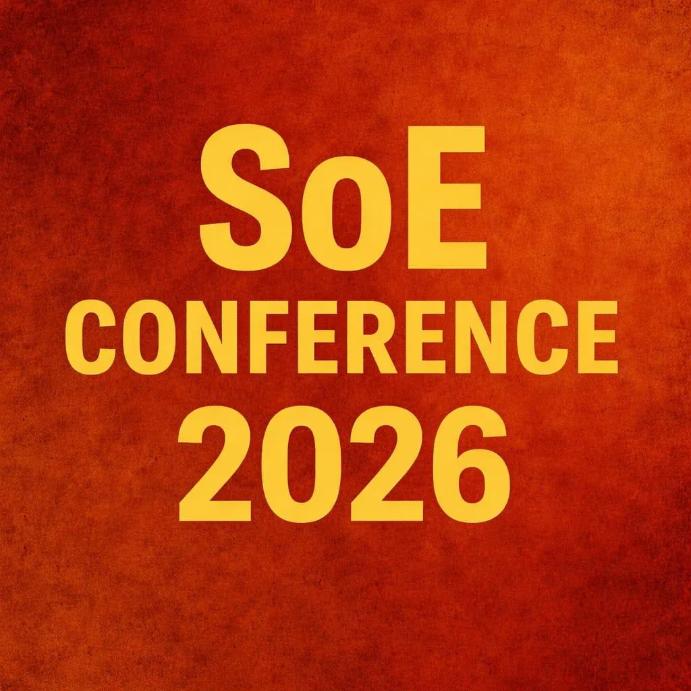
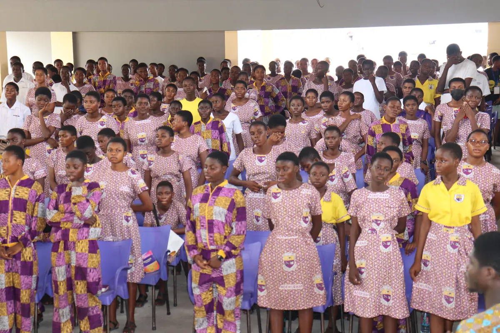

SATURDAY
Saturday Encounter Service
🕒 6:00 PM – 9:00 PM
Spiritual encounters, worship, prayer, the teaching of God’s Word and spiritual growth.

Join our weekly services, annual conferences and mission outreaches.
All times are Ghana time (GMT) unless stated otherwise.
🕒 6:00 PM – 9:00 PM
Spiritual encounters, worship, prayer, the teaching of God’s Word and spiritual growth.

🕒 6:00 PM – 8:30 PM
Music rehearsals, worship and musical ministration.

🕒 9:00 PM – 10:00 PM Ghana · 10:00 PM – 11:00 PM UK
Corporate prayer, intercession and spiritual engagement.

🕒 Time to be confirmed
Evangelism, personal witnessing, soul-winning and community outreach.
Equipping believers to win souls and to pray. Dates are announced through our website and social channels.

Designed primarily for Senior High School graduates who have completed their secondary education and want to deepen their relationship with Christ, develop their faith and grow in evangelism.
The programme runs for about three to five days in a camp setting. The ministry provides financial support for participants’ feeding, transportation and accommodation, so eligible participants can attend without bearing these costs.
Dedicated to developing believers in prayer, intercession and spiritual discipline. Its purpose is to equip participants with biblical foundations for prayer, strengthen their personal devotion and encourage a consistent life of prayer, with teaching, corporate prayer, spiritual development and fellowship.
Each year the ministry organises mission trips focused on preaching the Gospel, evangelism, prayer, spiritual encouragement and the advancement of the Christian faith.

Dated events published by the ministry. Dates use Ghana time.
Contact us for directions, programme details or to register your interest.